Browse by Subject Area
Resources
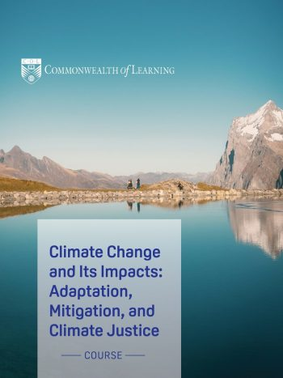
Climate Change and Its Impacts: Adaptation, Mitigation, and Climate Justice
Focus on strategies for adapting to climate change's impacts, mitigating its consequences, and addressing climate justice issues. Examines real-world examples and effective adaptation practices.
Explore Resource →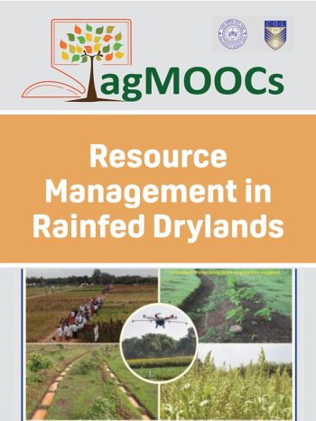
Resource Management in Rainfed Drylands
Comprehensive guide to dryland agriculture covering 67% of India's cultivated area. Features latest technological innovations for improving dryland productivity and achieving evergreen revolution.
Explore Resource →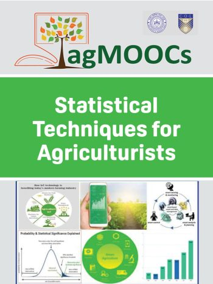
Statistical Techniques for Agriculturists
Essential training in agricultural statistics covering data collection, analysis, and modern applications. Includes Android/iOS/Windows apps for enhanced farm productivity and climate resilience.
Explore Resource →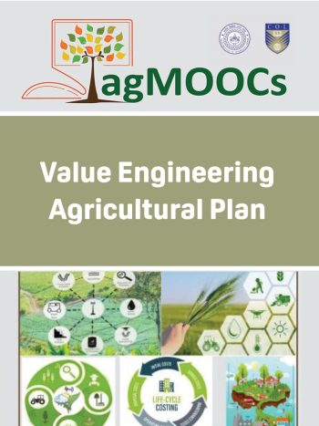
Value Engineering Agricultural Plan
Systematic problem-solving and cost-effective optimization techniques for agricultural machinery and equipment. Covers functional analysis, cost-benefit analysis, and sustainability optimization.
Explore Resource →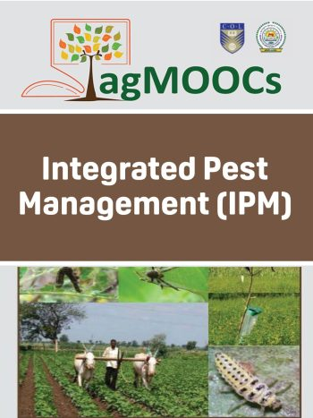
Integrated Pest Management (IPM)
Comprehensive guide to sustainable pest control covering legal, ecological, cultural, biological, and chemical approaches. Includes successful IPM cases across cereals, commercial crops, and vegetables.
Explore Resource →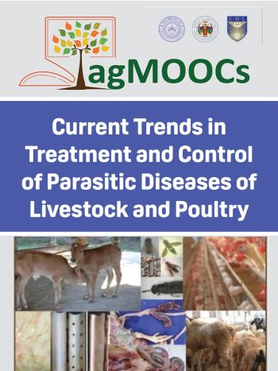
Current Trends in Treatment and Control of Parasitic Diseases of Livestock and Poultry
Advanced guide to parasitic disease management in livestock focusing on economic efficiency, diagnostic techniques, and treatment protocols for tropical and developing country contexts.
Explore Resource →Respecting Indigenous Rights and Practices: Ways to a Better Planet
Course for field workers on Indigenous community conservation practices and rights. Focuses on spiritual connections to nature and adapting traditional practices for environmental conservation.
Explore Resource →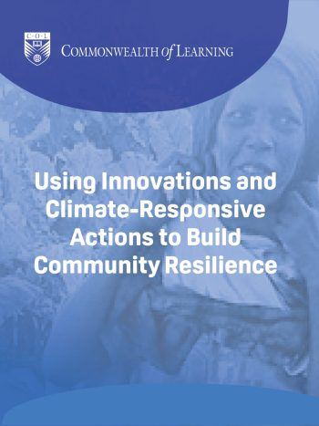
Using Innovations and Climate-Responsive Actions to Build Community Resilience
Explores alternative sustainable livelihoods and innovation models for climate resilience. Covers total biomass use, institutional support, and locally-adapted climate-responsive solutions.
Explore Resource →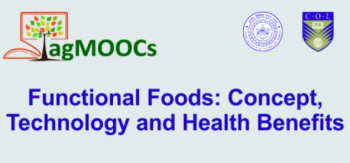
Functional Foods: Concept, Technology and Health Benefits
Due to increased cost of health-care and lifestyle related diseases, the consumers are shifting towards the functional foods for health promotion and disease prevention. Functional foods are prepared to promote health by targeting a physiological process that may help in disease prevention.
Explore Resource →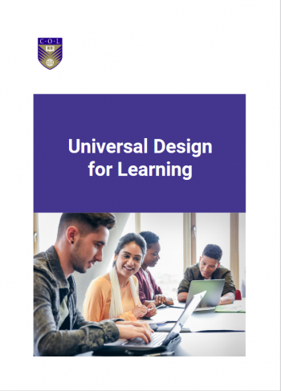
Universal Design for Learning
This is an introductory course on Univeral Design for Learning (UDL) developed using Accessibility Toolkit – 2nd Edition by Amanda Coolidge, Sue Doner, Tara Robertson, and Josie Gray and published by BCcampus under a Creative Commons Attribution 4.0 Licence.
Explore Resource →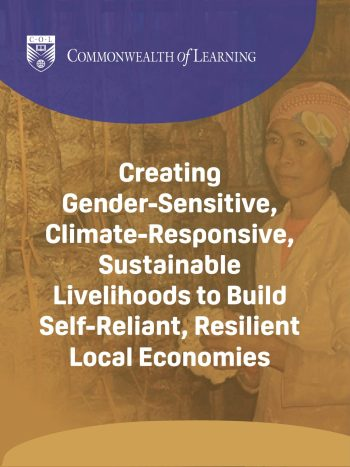
Creating Gender-Sensitive, Climate-Responsive, Sustainable Livelihoods
Comprehensive guide to developing gender-sensitive livelihoods for climate resilience. Explores environmental protection, job creation, and community adaptation strategies.
Explore Resource →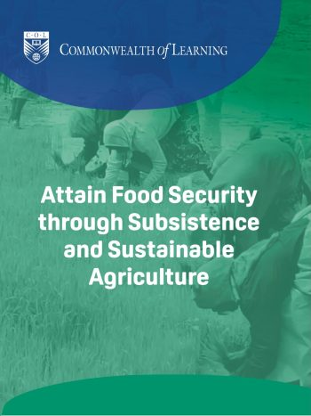
Attain Food Security through Subsistence and Sustainable Agriculture
Examines climate change effects on food security and presents sustainable agriculture innovations, traditional practices, and small-scale food processing techniques.
Explore Resource →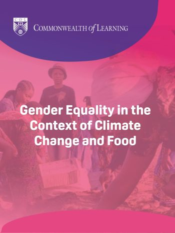
Gender Equality in the Context of Climate Change and Food Security
Explores how gender roles affect climate change mitigation and women's leadership in conservation projects. Features successful women-led initiatives.
Explore Resource →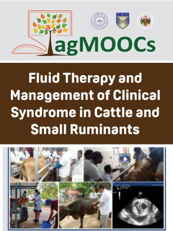
Fluid Therapy and Management of Clinical Syndrome in Cattle and Small Ruminants
Essential course on fluid therapy for ruminant health management. Covers dehydration, hypovolemia treatment protocols, and field-level veterinary practices.
Explore Resource →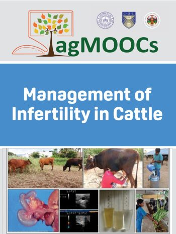
Management of Infertility in Cattle
Comprehensive agMOOCs covering six critical infertility topics including repeat breeding syndrome, anestrum, endometritis, and estrus synchronization.
Explore Resource →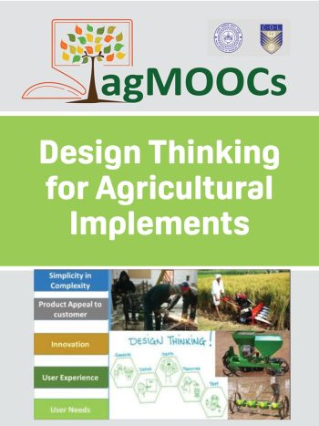
Design Thinking for Agricultural Implements
Introduction to creative design processes for agricultural equipment development. Covers customer needs analysis, problem-solving methodologies, and sustainable product development.
Explore Resource →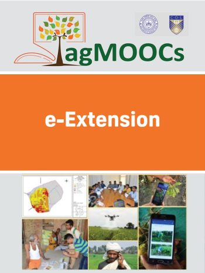
e-Extension
Revolutionary approach to agricultural extension using ICT. Covers historical aspects, current status, and practical applications of information technology in extension services.
Explore Resource →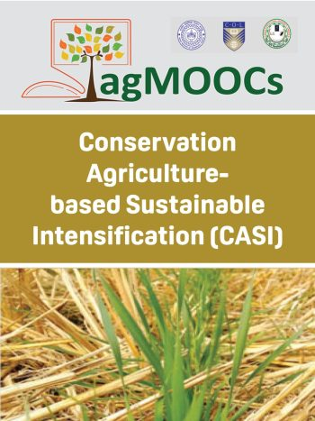
Conservation Agriculture-based Sustainable Intensification
CASI approach including zero tillage, mechanized crop establishment, and improved nutrition management. Focuses on productivity improvement while reducing environmental impact.
Explore Resource →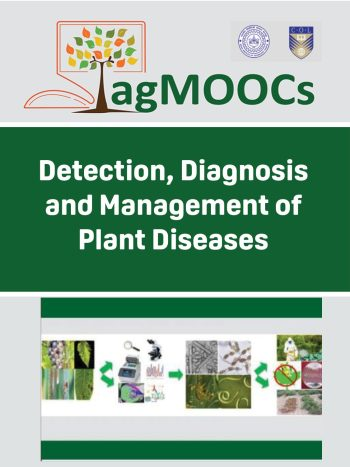
Detection, Diagnosis and Management of Plant Diseases
Comprehensive guide to plant disease diagnostics covering conventional and molecular techniques. Includes forensics, diagnostic challenges, and disease management applications.
Explore Resource →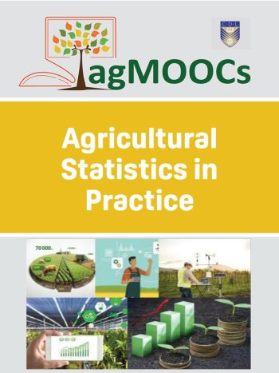
Agricultural Statistics in Practice
Practical application of statistical methods in agriculture with emphasis on descriptive and predictive analyses. Develops understanding of data-driven decision making.
Explore Resource →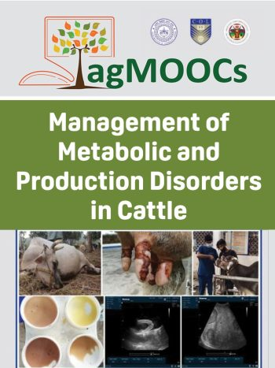
Management of Metabolic and Production Disorders in Cattle
Advanced veterinary course covering ketosis, milk fever, mastitis, and other metabolic disorders. Focuses on early diagnosis, treatment protocols, and economic impact reduction.
Explore Resource →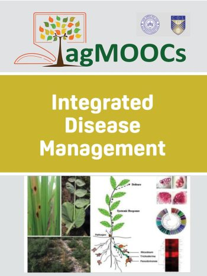
Integrated Disease Management
Billion-dollar crop loss prevention through integrated disease management strategies. Covers pathogen diversity, evolution, genomics, and biotechnological management tools.
Explore Resource →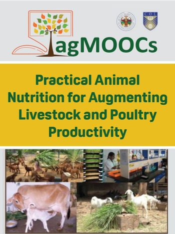
Practical Animal Nutrition for Augmenting Livestock and Poultry Productivity
Vital course focused on principles and practices of animal nutrition for all stakeholders in livestock and poultry farming, promoting benefits of balanced feeding.
Explore Resource →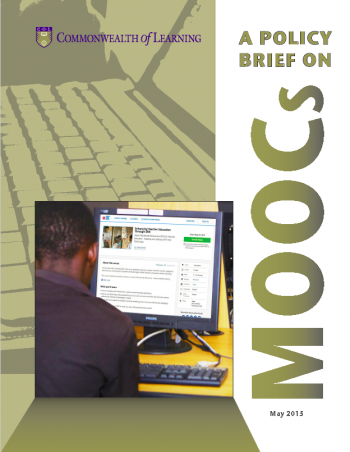
A Policy Brief on MOOCs
Comprehensive policy recommendations for educational institutions considering strategic implementation of Massive Open Online Courses in their curricula and programs.
Explore Resource →Advanced Cybersecurity Training for Teachers
High-level course for educators with advanced skills to defend against cyber threats in digital learning environments. Promotes best practices for secure online education.
Explore Resource →Cybersecurity Training for Teachers
Introductory course providing essential online safety knowledge for educators and parents. Focuses on safe digital learning technologies in developing country contexts.
Explore Resource →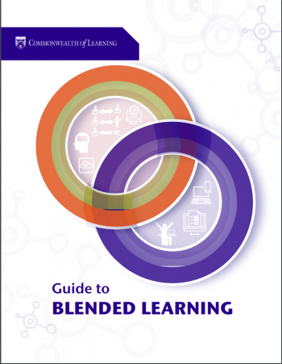
Guide to Blended Learning
Introduction to combining technology and distance education strategies with traditional face-to-face classroom activities for enhanced learning experiences.
Explore Resource →Climate Change and Climate Action
This course explains climate change and its impact on human lives from a local context, including local trends in severe weather and the impact of climate change on livelihoods.
Explore Resource →